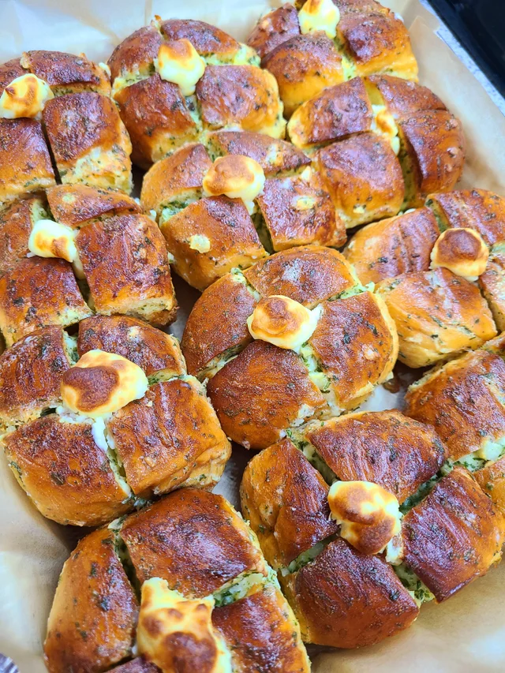

Cream Cheese Garlic Rolls

Ingredients:
- 6 small dinner rolls
- 8 oz softened cream cheese
- 2 tbsp sugar
- 1/2 cup softened butter
- 1 tbsp dried parsley
- 1 large egg (room temperature)
- 3 tbsp mayonnaise
- 1 tsp sugar
- 1 tbsp crushed garlic
Steps:
- Cut rolls (not all the way)
- Combine softened cream cheese and white sugar
- Mix softened butter, parsley, egg, mayo, tsp sugar, and garlic in a bowl
- Put cream cheese micture in a ziplock bag. Pipe it to the bread (in between)
- Brush garlic butter sauce on top and sides of bread
- Bake at 350F for 15-20 min. Or at 320F for 6-7 min if using an airfryer